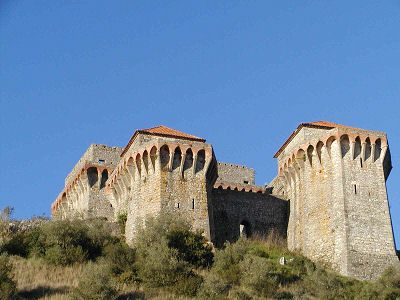

Ourem
The castle was founded between 1178 and 1180. Teresa, Alfonso Henriques' daughter, granted a charter to Ourem, which then became one of Portugal's first towns thanks to its castle's military value.
Ourem Castle stands high up in the town, forcing visitors to climb a steep slope that cuts through the historical part of Ourem. The town of Ourem used to be called Abdegas, and the legend goes that the town's current name is related to a Muslim girl called Fatima, who fell madly in love with a knight and converted to Christianity, adopting the name Oureana (see below).
Alfonso Henriques captured the initial castle from the Moors in 1136. But the current triangular-shaped castle was built in 1178.
|  |  |
Formed by three towers in a triangular perimeter, the centre of the square contains an enormous ogival tank, fed by a spring.
The tower on the north-west side is called the "tower of D. Mécia", in memory of the queen of the same name, the wife of King D. Sancho II.
The north side of the castle contains the "Terreiro de S. Tiago" gardens, the centre of which is home to the statue of D. Nuno Alvares Pereira, the 3rd Count of Ourem, who apparently set out from the castle during the famous Battle of Aljubarrota.
On the south side, facing the castle, the Palace of Count D. Alfonso can be found, followed by two imposing towers. The architecture of the palace and the towers is reminiscent of Venetian architecture, combining a Palatine usage with a military usage.
 |
 |
 |
To cope with the growing population, the walls had to be extended so as to protect the town; today, you can still see the city gates and those of Santarém.
Count D. Alfonso, grandson of King D. João I, is credited with transforming the castle into a residential palace. He also built the Gothic stone fountain with its coat of arms at the entrance to the town.
The castle was partially destroyed during the 1755 earthquake, just like the old part of town.
The Legend of Fatima
According to the legend, the town of Ourem owes it name to a love story: during the Reconquest, a Spanish crusader, Gonzalo Hermingues, captured the daughter of a powerful Muslim lord from Alacer do Sol. The ravishingly beautiful girl was called Fatima, just like Mahomet's daughter.
Gonzalo Hermingues and his captive soon fell in love, and Fatima willingly converted to Catholicism. She was baptised with the first name Ouranea (which gives the etymology of the town of Ourem) and they got married.
Fatima died in her prime. Gonzalo Hermingues was inconsolable and became a monk at the Cistercian abbey of Alcobaça, founded by Saint Bernard.
The abbey soon had a small priory in the neighbouring mountain, and Brother Hermingues was sent there. He quickly had the remains of his beloved Fatima brought to him; the place then took her name and is still called Fatima.